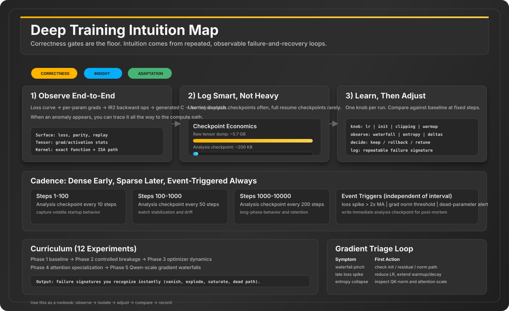

Deep Training Intuition Playbook
A practical roadmap for moving from pass/fail parity gates to gradient-level intuition: what to log, what to inspect, what to adjust, and how to learn from recurring failure patterns.
Companion Guide
For full operator details on v7 init, IR1/IR2 lowering, memory layout/canary diagnostics, and CK-vs-oracle parity commands, open v7-backprop-ir.html.
Infographic Snapshot

Visibility Stack
This stack is your advantage: anomalies can be traced from metric -> tensor -> op -> kernel -> runtime.
Correctness vs Intuition
Already Strong (Correctness)
- Parity and deterministic replay gates
- Contract checks and kernel coverage
- Single-run scalar dashboards
- IR and codegen traceability
Next Layer (Intuition)
- Activation histograms per layer over time
- Weight and gradient heatmaps (spatial)
- Gradient flow waterfall (layer boundary view)
- Attention entropy + sampled QK pattern evolution
- Run-to-run diff views, not only single-run views
Checkpoint Strategy That Fits Real Disk
Size values are planning estimates for a Qwen3-0.6B-like setup and vary with precision, sequence length, optimizer state, and which tensors you retain.
Logarithmic Cadence + Event Triggers
Steps 1-100
Analysis checkpoint every 10 steps
Steps 100-1000
Analysis checkpoint every 50 steps
Steps 1000-10000
Analysis checkpoint every 200 steps
Steps 10000+
Analysis checkpoint every 1000 steps
Analysis Checkpoint Data Contract
{
"schema_version": "ck.analysis.v1",
"model_scale_hint": "qwen3_0.6b_like",
"step": 500,
"loss": 2.341,
"weights": {
"layer.0.wq": {
"mean": 0.0012,
"std": 0.045,
"min": -0.23,
"max": 0.19,
"percentiles": [0.01, 0.05, 0.25, 0.50, 0.75, 0.95, 0.99],
"histogram": { "bins": [...], "counts": [...] },
"sampled_grid_32x32": [[...], ...]
}
},
"gradients": { "...": { "norm": 0.045, "histogram": {...} } },
"activations": { "...": { "mean": 0.12, "std": 0.45, "sparsity": 0.32 } },
"attention": {
"layer.0": {
"entropy_per_head": [...],
"max_attn_per_head": [...],
"sampled_qk_grid_32x32_per_head": [...]
}
}
}Keep this contract versioned. Dashboards should reject incompatible schema versions early rather than silently misrendering.
12-Experiment Learning Curriculum
Learn Healthy Baselines
- Run a stable baseline and memorize normal gradients.
- Vary init scale (tiny to huge) and inspect layerwise drift.
Break Gradient Flow On Purpose
- Sweep LR too high and too low.
- Zero one projection path and observe blocked upstream grads.
- Scale weights 5x, then recover with clipping.
Understand Optimizer Dynamics
- Compare SGD vs Adam using weight-delta statistics.
- Add warmup and inspect early-step stability.
Read Attention Behavior
- Track head entropy over time.
- Visualize sampled QK heatmaps and head redundancy.
Scale To Real Models
- Build layer gradient waterfalls on Qwen-scale runs.
- Rank params by relative movement from step 0.
- Perturb QK-norm and RoPE to identify load-bearing paths.
One Change, Full Observability
- Change one variable per run.
- Compare against baseline at fixed steps.
- Record diagnosis as a repeatable failure pattern.
Gradient Triage Cheat Sheet
| What You See | Likely Cause | First Knob To Adjust | Where To Inspect |
|---|---|---|---|
| Layer waterfall pinches mid-depth | Vanishing path or norm bottleneck | Init scale, residual path, norm params | activation_stats + per-layer grad norms |
| Loss spikes after smooth phase | LR too high for local curvature | LR decay or longer warmup | Weight delta magnitudes vs grad norms |
| Frequent clipping | Single tensor dominates global norm | Find offending tensor; adjust LR/regularization | Per-param gradient histogram outliers |
| Attention entropy collapses too early | Saturated logits / unstable attention scale | Check QK-norm path, init, LR | Head entropy timeline + sampled QK grids |
| Some params barely move across many steps | Dead or weakly-coupled path | Inspect upstream gradients and mask logic | Relative movement ranking + grad flow graph |
Implementation Order (Minimal, High Impact)
Step 1-3: Stats Instrumentation
- Buffer stats for weights, grads, activations
- Attention entropy and sparsity per head
- Weight-delta stats after optimizer step
Step 4-6: Visual Layers
- Weight and gradient heatmaps (sampled grid)
- Gradient waterfall and run-diff overlays
- Attention inspector with entropy timeline
train loop -> write analysis_checkpoint_*.json
-> open_ir_visualizer.py embeds data
-> ir_report training tabs render:
[gradient flow] [weights + activations] [attention]
Run This Now (v7)
1) Generate deterministic training reports
Creates core parity/replay artifacts in version/v7/reports/.
make v7-train-parity-3
make v7-replay2) Generate visual report HTML
Build an IR report from your latest artifacts without rerunning probes.
python3 version/v7/tools/open_ir_visualizer.py --generate --html-only3) Iterate with one change at a time
Change exactly one knob (LR, init scale, clipping, warmup), rerun, and compare snapshots at fixed steps.
artifacts: version/v7/reports/*.json
report: version/v7/tools/ir_visualizer.html (or generated ir_report*.html)Full Diagnostic Matrix (Phases 1-7)
This section is meant to be operational. Keep it open during training and use it as a live checklist.
Phase 1: Is It Even Working?
| Question | What to look at | Good | Bad |
|---|---|---|---|
| Is it training at all? | Loss curve, first 10 steps | Loss drops from random baseline (for 151K vocab, ln(vocab_size) is about 11.9) | Loss flat or NaN on step 1 |
| Are gradients flowing to every layer? | Gradient waterfall (layer 0 -> layer N) | All layers nonzero, typically within 10x range | Early layers near 1e-12 while late layers are around 1e-1 |
| Is any parameter dead? | Gradient Health tab, sort by norm | All trainable params above ~1e-7 | Repeated exact 0.0 or near-zero (<1e-10) norms |
| Is implementation correct? | Parity tracker (CK vs PyTorch) | loss_diff < 1e-6, param_diff < 1e-5 |
Diverges after a few steps |
| Are weights updating? | Weight delta statistics, ||w_new - w_old||_2 |
Nonzero deltas for expected trainable tensors | Near-zero deltas despite nonzero gradients |
| Is it deterministic? | Replay determinism gate | Two identical runs produce identical losses/metrics | Any unexplained drift indicates race/uninitialized state |
Phase 2: Is The Model Learning?
| Question | What to look at | Good | Bad |
|---|---|---|---|
| Is loss decreasing over real horizon? | Loss curve over 100+ steps | Clear downward trend (allowing noise) | Immediate plateau or pure oscillation |
| Is it memorizing training data? | Inference on training samples, training perplexity | Perplexity steadily drops toward 1.0 on repeated data | Perplexity remains high on same seen samples |
| How fast is memorization? | Early epoch loss slope | Steep initial drop | Shallow slope points to LR/capacity/data bottleneck |
| Has train set been mostly absorbed? | Training loss near data entropy floor | Plateau near expected entropy floor | Flat but still high means stuck optimization |
| Is it learning tokens or patterns? | Attention heatmaps on seen examples | Positional + semantic structure appears | Uniform attention or always position-0 attention |
| Are all layers contributing? | Per-layer movement, ||w_t - w_0||_2 / ||w_0||_2 |
Broad movement across multiple layers | Only small subset moves while others remain frozen |
Phase 3: What Is It Learning?
| Question | What to look at | Good | Bad |
|---|---|---|---|
| What are attention heads doing? | Per-head heatmaps across layers | Head specialization (positional, semantic, induction-like) | All heads uniform or all heads nearly identical |
| Which heads are redundant? | Head similarity matrix (cosine similarity) | Diversity within a layer | Many heads with similarity above 0.9 |
| Content vs position dependence? | Same tokens at different positions | Attention follows content as well as position | Purely diagonal regardless of content changes |
| Which weights changed most? | Global ranking by relative movement | Core projections and MLP weights move significantly | Only embeddings/norms move while core blocks stay static |
| Are MLP neurons specializing? | MLP hidden activation distributions | Distributions become structured/multimodal | No shape evolution over training |
| Is embedding space organizing? | Embedding heatmap step 0 vs step N | Visible structure/clustering emerges | Matrix remains random-looking with little change |
Phase 4: Is Something Going Wrong?
| Question | What to look at | Good | Bad |
|---|---|---|---|
| Why did loss spike? | Checkpoint at spike step: grads, deltas, activations | Transient spike that recovers quickly | No recovery; basin ejection requiring earlier restart |
| Vanishing gradient? | Layer waterfall at fixed step | Roughly stable magnitude across depth (about 2-3x variance) | 100x+ collapse from late to early layers |
| Exploding gradient? | Global + per-param norm trends | Stable or slowly decaying norm | Exponential norm growth across steps |
| Is clipping hiding root cause? | Per-param norms when clipping active | Rare clipping on few tensors | Clipping every step from same offenders |
| Are activations healthy? | Per-layer min/max/mean/std | Stable mean/std with bounded ranges | Drift, exploding std, or extreme outliers |
| Is LR schedule right? | Loss, LR, and delta magnitude overlay | Warmup stable, peak controlled, decay helpful | Spike at LR peak or no gain during decay phase |
Phase 5: Memorization -> Generalization
| Question | What to look at | Good | Bad |
|---|---|---|---|
| Is it overfitting? | Training loss vs held-out validation loss | Both decrease with a small and stable gap | Train improves while validation stalls/rises |
| When to stop pretraining? | Validation loss plateau window | Minimal improvement for long horizon (for example 100+ steps) | Still meaningful downward trend, or clear overfit trend |
| Is model capacity sufficient? | Final train loss vs entropy estimate | Approaches expected floor | Plateaus far above floor |
| Has it seen enough data? | Tokens processed + slope decay | Diminishing returns clearly visible | Still in steep drop phase |
| Any catastrophic forgetting? | Perplexity on early training probes over time | Remains low at late steps | Rises while training on newer slices |
Phase 6: Transition Readiness (Pretrain -> SFT -> RLHF/GRPO)
| Question | What to look at | Good signal to transition | Not ready |
|---|---|---|---|
| When is pretraining done? | Validation slope over last 1K steps | Very low slope and coherent next-token quality on unseen text | Validation still dropping clearly |
| Should SFT start? | Instruction-like generation probes | Fluent language but weak instruction following | Still produces unstable or broken language |
| How to verify SFT works? | Instruction-format loss + held-out instruction eval | Format adherence and response quality improve | Loss drops but behavior still ignores instruction format |
| When move SFT -> preference tuning? | Consistency and quality profile | Follows format reliably, needs preference shaping | Still fails basic instruction compliance |
| How evaluate pretraining quality before SFT? | Half-prompt continuation on seen and held-out samples | Strong continuation on train + reasonable held-out perplexity | Cannot reliably continue seen samples |
Phase 7: Memorization Test Protocol
Step 1: Reserve probes before training
Set aside 10-20 fixed probe samples from training data for longitudinal memorization checks.
Step 2: Evaluate at resume checkpoints
Feed first half of each probe, generate continuation, and score exact-match, overlap, and perplexity on the true continuation.
Step 3: Plot memorization curve
Track progression from near-random accuracy toward high completion accuracy as steps grow.
Step 4: Compare with held-out curve
Training-probe vs held-out accuracy gap is your best generalization indicator for transition decisions.
| Step | Probe accuracy (rough) | Interpretation |
|---|---|---|
| 0 | about 0% | Untrained baseline |
| 100 | 5-15% | Learning token statistics |
| 500 | 30-50% | Pattern acquisition phase |
| 2000 | 70-90% | Strong memorization of seen structures |
| 5000+ | 90%+ | Train probes mostly memorized |
The Map: Question -> Tool
| Question category | Primary tool | Secondary tool |
|---|---|---|
| Is it training? | Loss curve + parity tracker | Gradient Health |
| Are gradients correct? | Gradient waterfall | Finite-difference gradient checks |
| What is it learning? | Attention heatmaps | Weight movement ranking |
| Is it memorizing? | Inference on probe set | Loss slope + perplexity trends |
| Is something wrong? | Event checkpoint autopsy | Triage cheat sheet |
| Is pretraining done? | Validation plateau | Held-out quality probes |
| Ready for SFT? | Instruction-following eval | Format compliance tracking |
UI framing rule: each dashboard tab should be phrased as a question, not just a metric name.